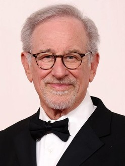

| Oscar Nominations | ||||
|---|---|---|---|---|
| Ceremony | Film | Category | Role | Result |
| 98th Academy Awards Oscars 2026 |
Hamnet | Best Picture | Producer | Nominated |
| 96th Academy Awards Oscars 2024 |
Maestro | Best Picture | Producer | Nominated |
| 95th Academy Awards Oscars 2023 |
The Fabelmans | Best Picture | Producer | Nominated |
| Directing | Director | Nominated | ||
| Writing (Original Screenplay) | Writer | Nominated | ||
| 94th Academy Awards Oscars 2022 |
West Side Story | Best Picture | Producer | Nominated |
| Directing | Director | Nominated | ||
| 90th Academy Awards Oscars 2018 |
The Post | Best Picture | Producer | Nominated |
| 88th Academy Awards Oscars 2016 |
Bridge of Spies | Best Picture | Producer | Nominated |
| 85th Academy Awards Oscars 2013 |
Lincoln | Best Picture | Producer | Nominated |
| Directing | Director | Nominated | ||
| 84th Academy Awards Oscars 2012 |
War Horse | Best Picture | Producer | Nominated |
| 79th Academy Awards Oscars 2007 |
Letters from Iwo Jima | Best Picture | Producer | Nominated |
| 78th Academy Awards Oscars 2006 |
Munich | Best Picture | Producer | Nominated |
| Directing | Director | Nominated | ||
| 71st Academy Awards Oscars 1999 |
Saving Private Ryan | Best Picture | Producer | Nominated |
| Directing | Director | Won | ||
| 66th Academy Awards Oscars 1994 |
Schindler's List | Best Picture | Producer | Won |
| Directing | Director | Won | ||
| 58th Academy Awards Oscars 1986 |
The Color Purple | Best Picture | Producer | Nominated |
| 55th Academy Awards Oscars 1983 |
E.T. The Extra-Terrestrial | Best Picture | Producer | Nominated |
| Directing | Director | Nominated | ||
| 54th Academy Awards Oscars 1982 |
Raiders of the Lost Ark | Directing | Director | Nominated |
| 50th Academy Awards Oscars 1978 |
Close Encounters of the Third Kind | Directing | Director | Nominated |

Steven Spielberg